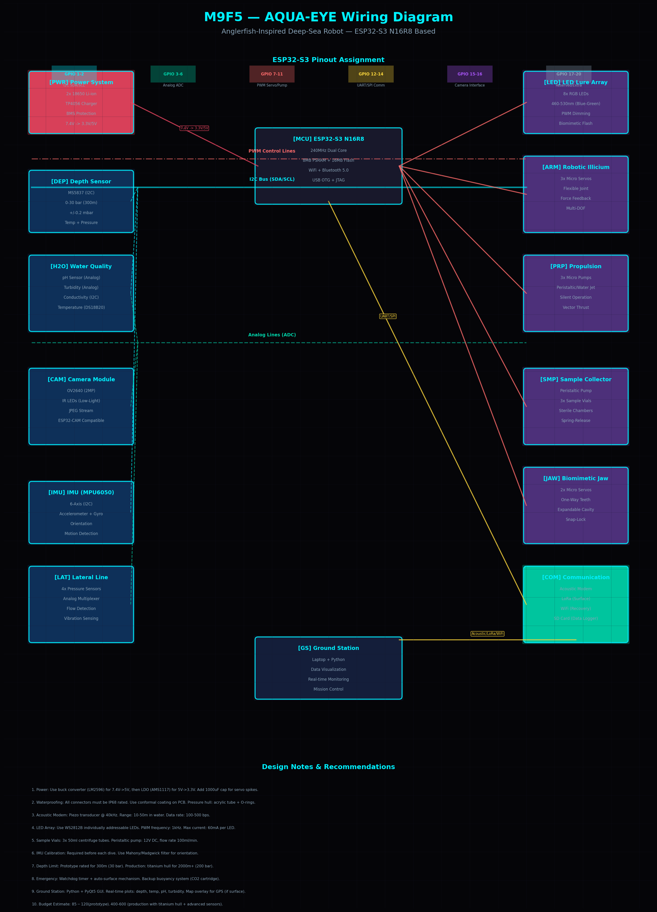

NASA Space Apps Challenge 2026
من أعماق المحيطات
إلى محيطات الفضاء
روبوت مستوحى من سمكة الأنجلر — يستكشف البيئات المظلمة والقاسية، من أعماق البحار إلى المحيط الجليدي تحت سطح قمر يوروبا.

روبوت مستوحى من سمكة الأنجلر — يستكشف البيئات المظلمة والقاسية، من أعماق البحار إلى المحيط الجليدي تحت سطح قمر يوروبا.
Biomimicry Engineering — لما الطبيعة تكون المهندس الأفضل

سمكة الأنجلر عاشت 50 مليون سنة في أعماق المحيطات — في ظلام دامس، ضغط هائل، وحرارة قريبة من التجمد. الطبيعة "هندست" كائن كامل يقدر يصيد، يتواصل، ويعيش في أقسى بيئة على الأرض.
إحنا بناخد كل التكيفات دي — الإضاءة الحيوية، الجسم المرن، آلية الصيد، واستراتيجية توفير الطاقة — ونحولها لـ روبوت مستقل يقدر يستكشف أماكن مفيش حد قدر يوصل لها.
"الطبيعة مش بس حلّت المشكلة — هي حلّتها بأقل طاقة ممكنة، وأعلى كفاءة ممكنة. ده اللي biomimicry بيعمله."
المشروع بيربط بين استكشاف الأرض (Earth) واستكشاف الفضاء (Space) — لأن المحيط الجليدي تحت قمر يوروبا بيشبه أعماق محيطاتنا بالظبط.
من الواقع إلى المستقبل — رحلة الاستكشاف


كل جزء في جسم الأنجلر فيه secret — وكل secret ده فكرة للروبوت
بكتيريا متعايشة داخل كتلة لحمية بتنتج ضوء أزرق-أخضر. الكفاءة 95% — مقارنة بـ 5% بس في المصباح العادي. الروبوت هايستخدم LED array بنفس الطيف الضوئي.
زعنفة ظهرية تحولت لذراع مرنة تنتهي بالإيسكا. بتتحرك ببطء ذهاب وإياب عشان تجذب الفريسة. الروبوت هايستخدم robotic arm مرن بنفس الفكرة.
يفتح بزاوية 120° أو أكتر، ويبتلع فريسة ضعف حجم السمكة. الأسنان متجهة للداخل — زي "صمام" one-way. الروبوت هايستخدم gripper mechanism بنفس التصميم.
جلد ناعم ومرن، عظام خفيفة، ومعدة قابلة للتمدد. ده بيسمح للسمكة تتحمل ضغط 200 atm على عمق 2000 متر. الروبوت هايستخدم silicone body + pressure-resistant hull.
مش بيسبحوا كتير — بيطفوا بشكل سلبي وينتظروا الفريسة. معدل الأيض (Metabolism) بطيء بنسبة 30% عن أسماك السطح. الروبوت هايستخدم sleep mode ذكي.
من Biology إلى Engineering — كل تكيف بقى ميزة تقنية
LED array بطيف أزرق-أخضر (460-530 nm) يحاكي bioluminescence. تحكم برمجي في شدة الضوء وتردد الوميض — بيستهلك طاقة ضئيلة جداً.
Micro-actuators بتتحكم في حركة ذراع مرنة تنتهي بـ LED lure. Force feedback بيحس مقاومة المية ويعدل الحركة.
Spring-release mechanism لسرعة انقضاض عالية. Expandable chamber لحفظ العينات. One-way locking زي أسنان الأنجلر.
Acoustic modem للاتصال تحت المية. Lateral line sensors (pressure array) لكشف الاهتزازات. Sonar miniaturized للتنقل في الظلام.
ESP32-S3 in deep-sleep mode. بيصحى بس لما sensors تكشف حركة أو تغير في البيئة. بطاريات Li-ion عالية الكثافة.
Pressure hull من aluminum 6061 مع silicone coating. 3D-printed resin body. يقدر يغوص لـ 300 متر في الـ prototype.
من المحيطات على الأرض إلى المحيطات في الفضاء
ناسا بتركز على Ocean Worlds — أماكن في الفضاء فيها محيطات مائية تحت سطح جليدي. أهمها قمر يوروبا (Europa) اللي بيدور حوالين كوكب المشتري.
تحت سطح يوروبا الجليدي فيه محيط عميق — ممكن يكون فيه حياة. بس المشكلة: إزاي نستكشف محيط مظلم، ضغطه عالي، وحرارته قريبة من التجمد؟
الإجابة: نقلد الكائنات اللي عاشت في نفس الظروف دي على الأرض. سمكة الأنجلر عاشت 50 مليون سنة في أعماق المحيطات — في ظلام، ضغط، وبرودة. كل تكيف في جسمها = حل هندسي لمشكلة زيها على يوروبا.
"الأرض هي المختبر. المحيطات العميقة هي analog للبيئات الفضائية. اللي نتعلمه هنا هناك هنستخدمه هناك."
أعماق المحيطات على الأرض = نفس ظروف محيطات الفضاء. بنختبر التكنولوجيا هنا قبل ما نبعتها للفضاء.
الروبوت بيجمع عينات ويحللها للبحث عن علامات الحياة (biosignatures) — نفس الهدف على يوروبا.
بنستخدم بيانات NASA Earthdata وOcean Color للمقارنة بين بيئات الأرض والفضاء.
| الخاصية | سمكة الأنجلر | ROV / AUV التقليدي | AQUA-EYE (مشروعنا) |
|---|---|---|---|
| مصدر الطاقة | أيض بيولوجي بطيء | بطارية محدودة أو كابل | Li-ion + sleep mode ذكي |
| الحركة | انتظار + انقضاض نبضي | دفع مستمر بالمراوح | Biomimetic fin propulsion |
| الإضاءة | بيولوجية داخلية موفرة | مصابيح قوية تستنزف الطاقة | LED array موفر + تحكم برمجي |
| التمويه | ممتاز (أسود، صغير) | ضعيف (معدن لامع) | Silicone body داكن + مرن |
| الاستشعار | حسي متعدد الأبعاد | أجهزة إلكترونية نمطية | Lateral line + sonar + camera |
| التكلفة | لا تنطبق | ملايين الدولارات | ~$100 (prototype) |
ESP32-S3 N16R8 — التصميم الكامل للـ hardware

2x 18650 Li-ion (7.4V) → Buck Converter (LM2596) → 5V → LDO (AMS1117) → 3.3V. BMS protection + TP4056 charging. 1000µF cap for servo spike protection.
Acoustic Modem (piezo @ 40kHz, 10-50m range, 100-500 bps) → LoRa (surface, 1-5km) → WiFi (recovery, 100m) → SD Card (data logger, 32GB+).
استراتيجية توفير الطاقة زي الأنجلر
من ميمو — للشخص اللي شغوف فشخ وأذكى من M19
فاطمة، إنتِ اللي هتجيبي الـ scientific backing للمشروع. كل claim لازم يكون وراه paper أو مصدر موثوق. NASA بتحب الـ data-driven arguments. استخدمي Google Scholar + arXiv + PubMed.
القصة هي 50% من المشروع. لازم تقدري تشرحي لـ judges ليه الأنجلر تحديداً — مش أي سمكة تانية. ركزي على: الـ extreme adaptation، الـ efficiency، والـ uniqueness. ده اللي هيميزكم.
الـ presentation لازم يكون 10 slides بس: Problem → Solution → NASA Relevance → Demo → Data → Team → Future. مفيش حد بيقرأ 50 slide. Keep it tight, visual, and memorable.
Working demo > perfect presentation. لو الروبوت بيتحرك في bucket of water وبيشغل الـ LEDs — ده أحسن من 1000 slide. Judges بيحبوا الـ hands-on. حتى لو بسيط، خليه يشتغل.
أنتِ وM19 — كل واحد فيكم ليه strength. M19 بيبني hardware، إنتِ بتعملي research وpitch. متدخلوش في شغل بعض. Trust each other. الـ synergy ده اللي هيبان للjudges.
الـ prototype ممكن يتعطل في الـ hackathon. جهزي: video demo (pre-recorded)، screenshots، data logs، وpitch without hardware. Always have a Plan B. NASA engineers بيحبوا الـ redundancy.
مهندسين شغوفين بيحاولوا يبنوا المستحيل
مهندس روبوتات وembedded systems. بيبني كل حاجة من خردة — من ESP32 لـ drones. شغوف بـ biomimicry وعايز يبني Iron Man toolkit بـ $0.
شغوفة فشخ بعلوم البحار والروبوتات. عندها رؤية واضحة لازم الروبوت يغطس للأعماق ويستكشف المحيطات والأمازون. أذكى من M19.
رحلتنا من الفكرة لـ NASA Space Apps Challenge